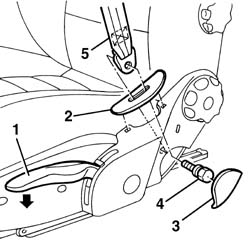
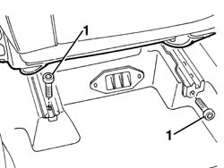
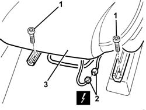
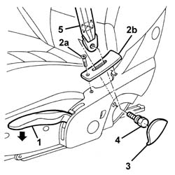
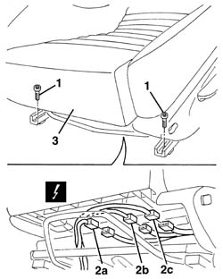

7045A10 l/h or r/h front seat (one) - r+r
- Path
- Procedures > 70 FITTINGS > 7045 FRONT SEATS > 7045A front seat assembly > 7045A10 l/h or r/h front seat (one) - r+r
- Kind
- repair procedure (removal / refitting; the operation number is the code)
- Applies to
- all engines; all production periods
- Interactive page
- https://sloeber94.github.io/elrnDB-a156/en/#/3238857
Applies to: all engines; all production periods
 Removing
Removing
 Refitting
Refitting1. Completely lower the seat height adjustment lever.
2. Release the belt trim.
3. Prise up the bolt cover panel.
4. Unscrew the bolt.
5. Remove the end of the seat belt from the seat.

Applies to: all engines; all production periods
1. Move the seat fully forward and undo the rear bolts.

Applies to: all engines; all production periods
1. Move the seat fully back and undo the front bolts.
2. Disconnect the electrical connection (if fitted).
 | Name | Connector |
|---|
2 | Driver's Side Bag | Q30 |
| Name | Connector |
|---|
2 | Passenger Side Bag | Q31 |
3. Remove the seat.

Applies to: all engines; all production periods
Refitting
RemovingCheck that the seat is not
damaged.
Fit the seat.
Connect the electrical connection (if fitted).
Move the seat back completely and tighten
the front bolts.
 | Fastening | Component | Ø | Value (daNm) |
|---|
- | Front bolt | FRONT SEAT ASSEMBLY. | M8 | 2.4 |
Move the seat forward completely and tighten
the rear bolts.
| Fastening | Component | Ø | Value (daNm) |
|---|
- | Rear bolt | FRONT SEAT ASSEMBLY. | M8 | 2.4 |
Refit the end of the seat belt on the seat,
securing it using the bolt.
| Fastening | Component | Ø | Value (daNm) |
|---|
- | Bolt | SEAT BELT END | M8 | 2.4 |
Fit the bolt cover.
Fit the belt trim.
Applies to: engines: 3.2 V6; all production periods; only with equipment: GTA
Removing
Refitting1. Completely lower the seat height adjustment lever.
2. Undo the bolt (2a) and release the belt trim (2b).
3. Prise up the bolt cover panel.
4. Unscrew the bolt.
5. Remove the end of the seat belt from the seat.

Applies to: engines: 3.2 V6; all production periods; only with equipment: GTA
1. Move the seat fully forward and undo the rear bolts.
Applies to: engines: 3.2 V6; all production periods; only with equipment: GTA
1. Move the seat fully back and undo the front bolts.
2. Disconnect the electrical connections (2a, 2b, 2c).
| Name | Connector |
|---|
2a | Driver's Side Bag | Q30 |
| Name | Connector |
|---|
2a | Passenger Side Bag | Q31 |
| Name | Connector |
|---|
2b | Left seat connection | D70B |
| Name | Connector |
|---|
2b | Right seat connection | D71B |
| Name | Connector |
|---|
2c | Left seat connection | D70A |
| Name | Connector |
|---|
2c | Right seat connection | D71A |
3. Remove the seat.

Applies to: engines: 3.2 V6; all production periods; only with equipment: GTA
Refitting
RemovingCheck that the seat is not damaged.
Fit the seat.
Connect the electrical connection.
Move the seat back completely and tighten
the front bolts.
| Fastening | Component | Ø | Value (daNm) |
|---|
- | Front bolt | FRONT SEAT ASSEMBLY. | M8 | 2.4 |
Move the seat forward completely and tighten
the rear bolts.
| Fastening | Component | Ø | Value (daNm) |
|---|
- | Rear bolt | FRONT SEAT ASSEMBLY. | M8 | 2.4 |
Refit the end of the seat belt on the seat,
securing it using the bolt.
| Fastening | Component | Ø | Value (daNm) |
|---|
- | Connector | POWER STEERING PUMP SUPPLY PIPE | M18 | (Power assisted steering pump side) 3.6 ÷ 4.4 |
Fit the bolt cover.
Fit the belt trim and tighten the bolt.
Topics linked from this page (6)
- D70A Left seat connection ( REAR ) connector pinout (pin -> wire colour -> other end) · engines: 1.6 TS , 1.8 TS, 2.0 JTS, 2.5 V6, 3.2 V6, 1.9 JTD 8v , 1.9 JTD 16v, 2.0 JTS, 2.4 JTD 10v, 2.4 JTD 20v; production: da 03/02 a 09/03, da 10/03
- D70B Left seat connection ( REAR ) connector pinout (pin -> wire colour -> other end) · engines: 1.6 TS , 1.8 TS, 2.0 JTS, 2.5 V6, 3.2 V6, 1.9 JTD 8v , 1.9 JTD 16v, 2.0 JTS, 2.4 JTD 10v, 2.4 JTD 20v; production: da 03/02 a 09/03, da 10/03
- D71A Right seat connection ( REAR ) connector pinout (pin -> wire colour -> other end) · engines: 1.6 TS , 1.8 TS, 2.0 JTS, 2.5 V6, 3.2 V6, 1.9 JTD 8v , 1.9 JTD 16v, 2.0 JTS, 2.4 JTD 10v, 2.4 JTD 20v; production: da 03/02 a 09/03, da 10/03
- D71B Right seat connection ( REAR ) connector pinout (pin -> wire colour -> other end) · engines: 1.6 TS , 1.8 TS, 2.0 JTS, 2.5 V6, 3.2 V6, 1.9 JTD 8v , 1.9 JTD 16v, 2.0 JTS, 2.4 JTD 10v, 2.4 JTD 20v; production: da 03/02 a 09/03, da 10/03
- Q30 Driver's Side Bag chapter (index of subtopics) · all engines; all production periods
- Q31 Passenger Side Bag chapter (index of subtopics) · all engines; all production periods
Topics that link to this page (49)
- O01 FRONT SEAT SLIDING NOT WORKING fault diagnosis table (symptom -> numbered test steps) · all engines; all production periods
- O02 FRONT SEAT BACKREST ANGLE ADJUSTMENT NOT WORKING fault diagnosis table (symptom -> numbered test steps) · all engines; all production periods
- O05 FRONT SEAT HEIGHT ADJUSTMENT NOT WORKING fault diagnosis table (symptom -> numbered test steps) · all engines; all production periods
- 3330B22 brake pedal - r+r manual gearbox versions repair procedure (removal / refitting; the operation number is the code) · all engines; all production periods
- 3330D02 brake servo/brake pump assembly - r r repair procedure (removal / refitting; the operation number is the code) · all engines; all production periods
- 3330D05 brake servo/brake pump assembly - r r for right hand drive versions repair procedure (removal / refitting; the operation number is the code) · engines: 2.5 V6, 2.4 JTD 10v; all production periods
- 3330D10 brake servo - r+r - includes separation from master cylinder (pump) repair procedure (removal / refitting; the operation number is the code) · all engines; all production periods
- 3330D11 brake servo - r r including seperation from master cylinder - facia lining removed for rhd version repair procedure (removal / refitting; the operation number is the code) · engines: 1.6 TS , 1.8 TS, 2.5 V6, 2.4 JTD 10v; all production periods
- 5010B47 side air duct to rear seat(one), lh or rh - r r repair procedure (removal / refitting; the operation number is the code) · all engines; all production periods
- 5020B31 air distribution flap control cable(one) - r r repair procedure (removal / refitting; the operation number is the code) · all engines; all production periods
- 5020B42 air mixer flap control cable - r+r repair procedure (removal / refitting; the operation number is the code) · all engines; all production periods
- 5040D76 air contitioner distribution flap control motor - r r repair procedure (removal / refitting; the operation number is the code) · all engines; all production periods
- 5040D77 air conditioner mixer flap control motor - r r repair procedure (removal / refitting; the operation number is the code) · all engines; all production periods
- 5505C41 cabin wiring - r r repair procedure (removal / refitting; the operation number is the code) · all engines; all production periods
- 5580C28 sensor for activating airbag beneath passenger seat - r r repair procedure (removal / refitting; the operation number is the code) · all engines; all production periods
- 5580C44 front side bag module one lh or rh r r repair procedure (removal / refitting; the operation number is the code) · all engines; all production periods
- 5580C86 side bag wiring harness (one) lh or rh - r r or replace repair procedure (removal / refitting; the operation number is the code) · all engines; all production periods
- 5580C92 connecting lead in seat for side air bag module r r repair procedure (removal / refitting; the operation number is the code) · all engines; all production periods
- 7015B44 tail gate catch control cable - r+r repair procedure (removal / refitting; the operation number is the code) · all engines; all production periods
- 7015B48 Tailgate OPENING CONTROL - R.R. repair procedure (removal / refitting; the operation number is the code) · all engines; all production periods
- 7025B30 boot lid open control - r+r repair procedure (removal / refitting; the operation number is the code) · all engines; all production periods
- 7025B32 boot lid catch cable - r+r repair procedure (removal / refitting; the operation number is the code) · all engines; all production periods
- 7025C32 fuel filler flap catch control - r+r repair procedure (removal / refitting; the operation number is the code) · all engines; all production periods
- 7040L10 cabin floor carpet - r r repair procedure (removal / refitting; the operation number is the code) · all engines; all production periods
- 7045A14 Front seat CUSHION ASSEMBLY (one), left or right - R.R. repair procedure (removal / refitting; the operation number is the code) · engines: 3.2 V6; all production periods
- 7045A18 FRONT SEAT BACKREST ASSEMBLY (ONE), LEFT OR RIGHT - R.R. repair procedure (removal / refitting; the operation number is the code) · engines: 3.2 V6; all production periods
- 7045A19 BACKREST - CENTRE SECTION - front seat (one, left or right - R.R . repair procedure (removal / refitting; the operation number is the code) · engines: 3.2 V6; all production periods
- 7045A29 seat slide control lever - r r repair procedure (removal / refitting; the operation number is the code) · all engines; all production periods
- 7045a36 drivers seat manual height adjustment device - r r repair procedure (removal / refitting; the operation number is the code) · all engines; all production periods
- 7045a38 device for driver`s seat squab lumbar adjustment - r r with seat removed repair procedure (removal / refitting; the operation number is the code) · all engines; all production periods
- 7045A39 device for driver`s seat squab lumbar adjustment - r r repair procedure (removal / refitting; the operation number is the code) · all engines; all production periods
- 7045a43 seat exterior guard - r r repair procedure (removal / refitting; the operation number is the code) · all engines; all production periods
- 7045A44 seat interior guard - r r repair procedure (removal / refitting; the operation number is the code) · all engines; all production periods
- 7045A60 front seat lift device - r r repair procedure (removal / refitting; the operation number is the code) · all engines; all production periods
- 7045A71 front seat support/guide - driver`s side with lift device - r r repair procedure (removal / refitting; the operation number is the code) · all engines; all production periods
- 7045A73 front seat mount/guide - passenger`s side r r repair procedure (removal / refitting; the operation number is the code) · all engines; all production periods
- 7045A85 Front seat BACKREST COVER, left or right - R.R. repair procedure (removal / refitting; the operation number is the code) · all engines; all production periods
- 7045A87 Front seat CUSHION COVER, left or right - R.R . repair procedure (removal / refitting; the operation number is the code) · all engines; all production periods
- 7045A89 Front seat BACKREST UPHOLSTERY, left or right - R.R . repair procedure (removal / refitting; the operation number is the code) · all engines; all production periods
- 7045A91 Front seat, CUSHION UPHOLSTERY left or right - R.R. repair procedure (removal / refitting; the operation number is the code) · all engines; all production periods
- 7045A98 front seat rear pouch panel, lh or rh - r r repair procedure (removal / refitting; the operation number is the code) · engines: 3.2 V6; all production periods
- 7045D24 Front seat CUSHION ASSEMBLY COVER (one), left or right - R.R. repair procedure (removal / refitting; the operation number is the code) · engines: 3.2 V6; all production periods
- 7045J34 front seat squab rake motor, l/h or r/h - r+r following electrical wiring check repair procedure (removal / refitting; the operation number is the code) · engines: 3.2 V6; all production periods
- 7045J60 Front seat BACKREST ANGLE control switch, left or right - R.R. for check repair procedure (removal / refitting; the operation number is the code) · engines: 3.2 V6; all production periods
- 7045M22 l/h or r/h front seat cushion heat pad - r+r following electrical wiring check repair procedure (removal / refitting; the operation number is the code) · engines: 3.2 V6; all production periods
- 7045M26 l/h or r/h front seat squab heat pad - r+r following electrical wiring check repair procedure (removal / refitting; the operation number is the code) · engines: 3.2 V6; all production periods
- 7045M30 LED signalling front seat HEATING, left or right - R.R. repair procedure (removal / refitting; the operation number is the code) · engines: 3.2 V6; all production periods
- 7065A14 ANCHORAGE ROD for , (one), front seat belt left or right - R.R. repair procedure (removal / refitting; the operation number is the code) · all engines; all production periods
- 7065A80 pre-tensioner wiring - r r repair procedure (removal / refitting; the operation number is the code) · all engines; all production periods